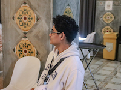

Lance Lorenzo | WDD 130
Hi! My name is Lance Lorenzo, and I'm from Laguna, Philippines. I enjoy reading, listening to music, and learning new things. I'm currently studying Web Design and Development at BYU-Idaho through the Pathway program. I've always been fascinated by how websites work and how design can help people connect, learn, and create. Through this course, I hope to gain the skills needed to design and build websites that are not only visually appealing but also meaningful and user-friendly. My goal is to continue improving my abilities so I can use them to serve others and make a positive impact through technology.